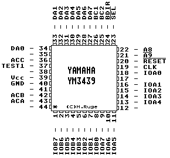

Previous
Next
TOC
Die Pinbelegung des STBook/Falcon030 Soundchips

YM2149 - Software Controlled Sound Generator
Features
3 Sound + 1 Noise Generators and Internal DAC
Two 8-bit Parallel Ports
5-bit Envelope Generator/ 4-bit Volume Control
YM3439 is CMOS, YMZ284 is 18-pin w/o Ports
Kapitel Die Pinbelegung des STBook/Falcon030 Soundchips, Seite 1